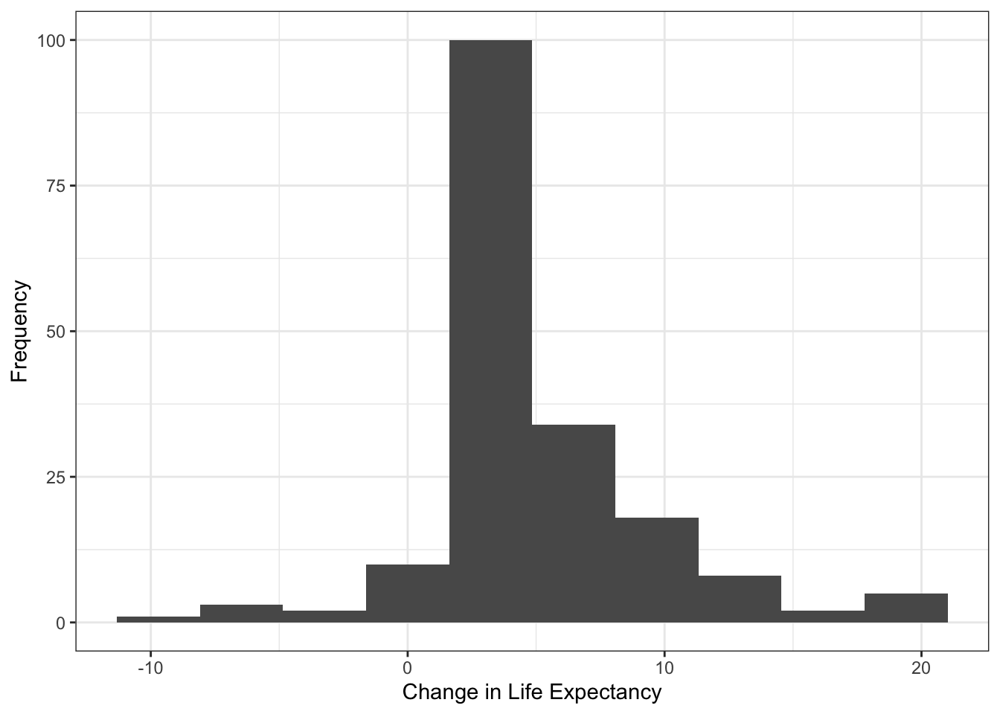

Life Expectancy
| Country | Life Expectancy |
|---|---|
| Slovenia | 88.0 |
| Denmark | 86.0 |
| Chile | 85.0 |
| Cyprus | 85.0 |
| Japan | 83.7 |
| Switzerland | 83.4 |
| Singapore | 83.1 |
| Australia | 82.8 |
| Spain | 82.8 |
| Iceland | 82.7 |
Overview of Data
Controllable Variables
Alcohol: Alcohol consumption per capita (liters of pure alcohol)pct_expend: Expenditure on health as a percentage of GDP per capitahep_b: Hepatitis B immunization rate among 1-year-olds (%)Polio: Polio immunization rate among 1-year-olds (%)tot_expend: Government expenditure on healthcare as a percentage of total government expenditureDiphtheria: Diphtheria tetnus toxoid and pertussis immunization rate among 1-year-olds (%)hiv_aids: Number of deaths of 0-4 year-olds from HIV/AIDS per 1000 live birthsSchooling: Average number of years of schooling
Uncontrollable Variables (Nuiscance Variables)
BMI: Average BMI (Body Mass Index) of entire country’s populationGDP: GDP per capitaPopulation: Total population of countrythinnes_adole: Prevalence of “thinness” among adolescents aged 10-19 (%)thinness_infant: Prevalence of “thinness” among infants aged 5-9 (%)income_comp: Human Development Index in terms of income composition of resources (0 to 1)Status: Developmental status of country (Developed or Developing)
Indicator Variables
under_five_deaths: Number of deaths of 5-year-olds or younger per 1000 peoplelife_exp: Average expectancy in country (years)adult_mortality: Number of deaths of people aged 15-60 per 1000 peopleinfant_mortality: Number of infants deaths per 1000 infants
Exploratory Data Analysis

Warning: Removed 10 rows containing non-finite values (stat_boxplot).

Generally countries increased life expectancy. Which ones did not?
# A tibble: 9 × 23
delta_Life_Exp Country Year Status life_exp adult_mortality infant_mortality
<dbl> <chr> <dbl> <fct> <dbl> <dbl> <dbl>
1 -0.400 Estonia 2000 Devel… 78 218 0
2 -0.400 Grenada 2000 Devel… 74 182 0
3 -1.10 Iraq 2000 Devel… 70 144 30
4 -5.3 Libya 2000 Devel… 78 148 3
5 -5 Paraguay 2000 Devel… 79 172 4
6 -2 Romania 2000 Devel… 77 175 4
7 -5.8 Saint V… 2000 Devel… 79 186 0
8 -8.10 Syrian … 2000 Devel… 72.6 136 10
9 -2.30 Yemen 2000 Devel… 68 252 48
# … with 16 more variables: Alcohol <dbl>, pct_expend <dbl>, hep_b <dbl>,
# Measles <dbl>, BMI <dbl>, under_five_deaths <dbl>, Polio <dbl>,
# tot_expend <dbl>, Diphtheria <dbl>, hiv_aids <dbl>, GDP <dbl>,
# Population <dbl>, thinness_adole <dbl>, thinness_infant <dbl>,
# income_comp <dbl>, Schooling <dbl>